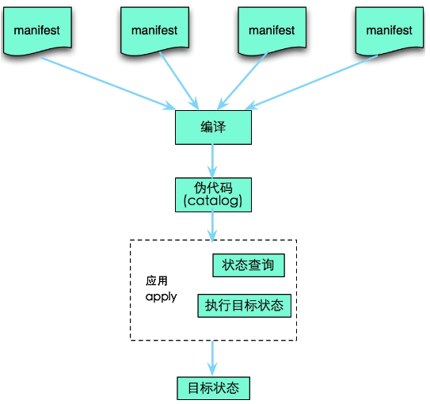

运维自运化之Puppet
- TAGS: Linux
puppet概述
企业自动化工具puppet使用场景以及使用方法，如何去搭建企业运维自动化平台架构
Ruby 是一种面向对象、命令式、函数式、动态的通用编程语言。在20世纪90年 代中期由日本人松本行弘设计并开发，遵守BSD许可证和Ruby License。它的灵 感与特性来自于Perl、Smalltalk、Eiffel、Ada以及Lisp语言。
Ruby的作者－－松本行弘于1993年2月24日开始编写Ruby，直至1995年12月才正 式公开发布于fj（新闻组）。之所以称为Ruby是取法自Perl，因为Perl的发音与 6月的诞生石pearl（珍珠）相同，Ruby选择以7月的诞生石ruby（红宝石）命名。
Ruby的作者认为Ruby > (Smalltalk + Perl) / 2，表示Ruby是一个语法像 Smalltalk一样完全面向对象、脚本运行、又有Perl强大的文字处理功能的编程 语言。
特色
- 完全面向对象：任何东西都是对象，没有基础类型
- 变量没有类型（动态类型）
- 任何东西都有值：不管是四则运算、逻辑表达式还是一个语句，都有回传值。
- 运算符重载
- 垃圾回收
- 强类型
- 变量无需声明
- 在Windows上，加载DLL
什么时候用
刚开始规模小，可能手动解决 随着目录命名，服务器命名越来越规范，可能用ansible 规模变大，配置需要改变，这时候就需要模块化，puppet
puppet简介
OS Provision 系统安装：
- bare metal：pxe, cobbler
- virutal machine：image file template
Configuration 配置：
- ansible(agentless)
- puppet(master/agent)（ruby）
- saltstack（python）
Command and Control 批量操作工具：
- ansible(playbook)
- fabric(fab)
- func
- …
puppet: IT基础设施自动化管理工具：
- 整个生命周期：
- provisioning 系统安装
- configuration 系统配置
- orchestration 编排
- reporting
- 作者：Luke Kanies, PuppetLabs
- 2005, 0.2 –> 0.24.x –> 0.25.x –> 0.26.x(2.6.x) –> 2.7.x –> 3.0
- puppet: agent
- master/agent
master: puppet server协调管理多个节点
agent: 真正执行相应管理操作的核心部件：周期性地去Master请求与自己相关的配置；
puppet的工作模式：
声明性、基于模型：
- 定义：使用puppet配置语言定义基础配置信息；
- 模拟：模拟测试运行；
- 强制：强制当前与定义的目标状态保持一致；
- 报告：通过puppet api将执行结果发送给使用者；
puppet的有三个层次：
- 第三层配置语言层
- 第二层事务层
第一层资源抽象层
资源类型： 例如用户、组、文件、服务、cron任务等等；
属性及状态 与 其实现方式分离；
期望状态
puppet核心组件： 资源

- 资源清单： manifests
- 资源清单及清单中的资源定义的所依赖文件、模板等数据按特定结构组织起为“模块”
- 定义清单的主要作业：将应用清单的站点处于目标状态
- 应用前，清单需要编译成catlog
- 应用
puppet apply <file>本地不通过主从模式而手动运行清单
重要概念
- 资源：定义目标状态的核心组件；
- 核心资源包括：notify、package、group、user、file、exec、cron、service等；
- 模块：以资源为核心，是类的集合，如mod1，mod2
节点：以被管理主机为为核心，如node1，node2
puppet利用模块+节点的方式，实现目标状态的定义
- manifest：清单，用于定义并保存资源，是一个资源组织工具；
- facter：获取各被管理节点资源使用情况的方式；
puppet的基本工作流程

puppet使用入门
单机模式下的安装使用
安装需要：
- agent端: puppet, facter
- master端: puppet-server
下载puppet: https://yum.puppetlabs.com/
yum -y install ruby # 安装ruby环境 yum -y localinstall facter-1.7.3-1.el6.x86_64.rpm # puppet 2.7版本依赖facter 2.0以下的版本 yum -y localinstall puppet-2.7.25-1.el6.noarch.rpm
yum地址：
centOS6
- 安装包：https://yum.puppetlabs.com/el/6.5/products/x86_64/
- 依赖包：https://yum.puppetlabs.com/el/6.5/dependencies/x86_64/
- epel源：wget -O /etc/yum.repos.d/epel.repo http://mirrors.aliyun.com/repo/epel-6.repo
centOS7
- 安装包：https://yum.puppetlabs.com/el/7/products/x86_64/
- epel源依赖：wget -O /etc/yum.repos.d/epel.repo http://mirrors.aliyun.com/repo/epel-7.repo
演示：安装puppet
#CentOS6单机板 [root@hd-test-all-01 pup]# ll 总用量 1772 facter-2.4.6-1.el6.x86_64.rpm puppet-3.8.7-1.el6.noarch.rpm puppet-server-3.8.7-1.el6.noarch.rpm ruby-shadow-2.2.0-2.el6.x86_64.rpm yum install ruby -y yum install ruby-shadow-2.2.0-2.el6.x86_64.rpm facter-2.4.6-1.el6.x86_64.rpm puppet-3.8.7-1.el6.noarch.rpm #CentOS7 单机板 [root@centos7-01 tools]# ll facter-2.4.4-1.el7.x86_64.rpm puppet-3.8.4-1.el7.noarch.rpm puppet-server-3.8.4-1.el7.noarch.rpm yum install ruby -y yum install facter-2.4.4-1.el7.x86_64.rpm puppet-3.8.4-1.el7.noarch.rpm
rpmq -ql puppet
/etc/puppet/puppet.conf 主配置文件 /usr/bin/puppet 主 /usr/lib/systemd/system/puppet.service /usr/lib/systemd/system/puppetagent.service 如果工作的master/agent模式，可以作为agent服务运行
puppet 命令的用法格式 ：
Usage: puppet <subcommand必选> [options] <action必选> [options]
查看帮助: puppet help
获取所支持的所有的资源类型：
# puppet describe -l # puppet describe RESOURCE_TYPE #显示资源notify的使用帮助
puppet核心资源
定义资源
puppet资源
如果把OS的所有配置，如用户账号、特定的文件、文件所属的目录、运行的服务、程序包以及cron任务等，看作是许多独立原子单元的集合的话，这些所谓的“单元”就是“资源”，不过，这些资源在其大小、复杂程度以及生命周期的跨度上等多个维度上可能会各不相同。
通常来说，类属于同一种资源的属性是相近的，如文件都有其属主和属组，而用户账号则由用户名、UID、GID等组成。但，即便是同一种资源，其在不同OS上的实现方式却又可能各不相同，例如，在windows上和Linux上启动和停止服务的方式相去甚远。
因此，puppet从以下三个维度来对资源完成抽象。
- 相似的资源被抽象成同一种资源“类型”，如程序包资源、用户资源及服务资源等；
- 将资源属性或状态的描述与其实现方式剥离开来，如仅说明安装一个程序包而 不用关心其具体是通过yum、pkgadd、ports或是其它方式实现；
- 仅描述资源的目标状态，也即期望其实现的结果，而不是其具体过程，如“确 定nginx运行起来”而不是具体描述为“运行nginx命令将其启动起来”；
这三个也被称作puppet的资源抽象层(RAL)。RAL由type(类型)和provider(提供者，即不同OS上的特定实现)组成。
puppet资源结构
在为puppet定义一个资源时，需要为其指定所属的类型和资源标题，并同时配置一系列的属性和对应的值。puppet通过其特有的语言来描述和管理资源，如下面所示的资源定义。
user { 'cici':
ensure => present,
uid => '601',
gid => '601',
shell => '/bin/bash',
home => '/home/cici',
managehome => true,
}
这种语法被称作“资源申报(resource declaration)”，它是puppet语言的核心组成部分。上述的定义中，仅描述了资源的目标状态而没有提到为达成目标所需要采取的任何步骤。而资源定义的核心也可以抽象为type、title、attribute和value四个部分。
puppet有许多内置的资源类型，而通过安装插件还可以继续新增额外的类型。可以通过puppet官方的类型参考页面(http://docs.puppetlabs.com/references/latest/type.html)获取详细的信息。也可以使用“puppet describe”命令来获取puppet当前所支持的类型列表及每种类型的详细信息，下面给出了一个简要的使用说明。
puppet describe -l：例如puppet支持的所有资源类型及其描述信息； puppet describe -s <TYPE>：列出指定资源的简要说明； puppet describe <TYPE>：显示指定资源的详细说明；
定义资源
如前所述，资源是puppet用于模型化系统配置的基础单元，每个资源都都从某个角度描述了系统属性，如某程序包必须安装或某用户必须移除等。在puppet，用于完成此类功能的代码也即“资源申报”。
定义资源方式：
type{'title':
attribute1 => value1,
attribute2 => value2, #最后一个,是可有可无的
}
在定义时，type资源类型必须使用小写字符；而资源名称仅是一个字符串，但要求在同一个类型中其必须惟一，这意味着，可以同时有名为nginx的“service”资源和“package”资源，但在“package”类型的资源中只能有一个名为“nginx”。
资源属性中的三个特殊属性：
- Namevar， 可简称为name；
- ensure：资源的目标状态；
- Provider：指明资源的管理接口；
常用资源类型 ：
user, group, file, package, service, exec, cron, notify
资源的浏览及查找
puppet describe [TYPE] 获取puppet当前所支持的类型列表及每种类型的详细信息。
-l :列出所有资源类型
# puppet describe group
puppet resource 命令可用于交互式查找及修改puppet资源。
puppet resource <TYPE> [<NAME>] [ATTRIBUTE=VALUE ...]
它可见于大多数资源中，用于控制资源的存在性
ensure =>file ：存在且为一个普通文件 ensure => directory：存在且为一个目录 ensure => prsent：存在，可通用于描述上述三种； ensure => absent：不存在
资源清单的应用
puppet apply <file> 本地不通过主从模式而手动运行清单
puppet apply [-h|--help] [-V|--version] [-d|--debug] [-v|--verbose] [-e|--execute] [--detailed-exitcodes] [-L|--loadclasses] [-l|--logdest syslog|eventlog|<FILE>|console] [--noop] [--catalog <catalog>] [--write-catalog-summary] <file> -v : 显示详细信息 -d: 显示debug信息 --catalog <catalog> ：指定catalog文件 --noop： 干跑一遍不执行 -e ：执行代码 --modulepath ：模块路径
范例：
$ puppet apply --modulepath=/root/dev/modules -e "include ntpd::server" [root@hd-test-all-01 manifests]# puppet apply -v test1.pp /usr/lib/ruby/site_ruby/1.8/puppet/defaults.rb:214: warning: Insecure world writable dir /opt/apache-maven/bin in PATH, mode 040777 Notice: Compiled catalog for hd-test-all-01(主机名称) in environment production(生产环境做了编译) in 0.14 seconds #puppet可以同时支持不同环境，生产环境(默认)、测试环境等 Info: Applying configuration version '1495678678' Notice: /Stage[main]/Main/Group[dsstro]/ensure: created Notice: /Stage[main]/Main/User[centos]/ensure: created Info: Creating state file /var/lib/puppet/state/state.yaml #创建了状态文件/var/lib/puppet/state/state.yaml Notice: Finished catalog run in 0.09 seconds Notice: 通知 info：信息
常用资源介绍
group: 管理组资源
puppet describe group 帮助资源信息
常用属性：
name: 组名, NameVar gid：GID system: true, false 系统组 ensure: present(创建), absent(删除) members: 组成员 ---- allowdupe：yes, no, true, false 是否使用同一个GID号
user: 管理用户
常用属性：
commet: 注释信息 ensure: present, absent expiry: 过期期限 gid: 基于组id groups: 附加组 home： 家目录 shell: 默认shell name: NameVar system: 是否为系统用户，true | false uid: UID password: ---- keys：指定密钥 purge_ssh_keys： 是否修剪sshkey
范例：
#group组资源 [root@hd-test-all-01 manifests]# puppet describe group [root@hd-test-all-01 learnpuppet]# mkdir manifests [root@hd-test-all-01 learnpuppet]# cd manifests/ #定义资源清单 [root@hd-test-all-01 manifests]# vim test1.pp group{'distro': gid => 2000, ensure => present, } user{'centos': uid => 2000, gid => 2000, shell => '/bin/bash', home => '/home/centos', ensure => present } #应用 [root@hd-test-all-01 manifests]# puppet apply -v test1.pp /usr/lib/ruby/site_ruby/1.8/puppet/defaults.rb:214: warning: Insecure world writable dir /opt/apache-maven/bin in PATH, mode 040777 Notice: Compiled catalog for hd-test-all-01(主机名称) in environment production(生产环境做了编译) in 0.14 seconds #puppet可以同时支持不同环境，生产环境(默认)、测试环境等 Info: Applying configuration version '1495678678' Notice: /Stage[main]/Main/Group[distro]/ensure: created Notice: /Stage[main]/Main/User[centos]/ensure: created Info: Creating state file /var/lib/puppet/state/state.yaml #创建了状态文件/var/lib/puppet/state/state.yaml Notice: Finished catalog run in 0.09 seconds Notice: 通知 info：信息 #删除用户和组 [root@hd-test-all-01 manifests]# cat test1.pp user{'centos': ensure => absent, } group{'dsstro': ensure => absent, } [root@hd-test-all-01 manifests]# puppet apply -v test1.pp /usr/lib/ruby/site_ruby/1.8/puppet/defaults.rb:214: warning: Insecure world writable dir /opt/apache-maven/bin in PATH, mode 040777 Notice: Compiled catalog for hd-test-all-01 in environment production in 0.12 seconds Info: Applying configuration version '1495769186' Notice: /Stage[main]/Main/User[centos]/ensure: removed Notice: /Stage[main]/Main/Group[dsstro]/ensure: removed Notice: Finished catalog run in 0.10 seconds
file 管理文件及其内容、从属关系以及权限
内容可通过content属性直接给出，也可通过source属性根据远程服务器路径下载生成；
指明文件内容来源：
content: 直接给出文件内容， 支持\n, \t； source: 从指定位置下载文件； ensure: file文件, directory目录, link连接文件, present, absent
常用属性：
force: 强制运行,可用值yes, no, true, false 如果创建目录时有同名文件可强制覆盖 group: 属组 ower: 属主 mode: 权限，支持八进制 格式权限(0644)，以及u,g,o的赋权方式(`a=r,ug+w`, or `ug=rw,o=r`)； path：目标路径；建议使用绝对路径 source：源文件路径；可以是本地文件路径（单机模型），也可以使用puppet:///modules/module_name/file_name target: 当ensure为'link'时，target表示path指向的文件是一个符号链接文件，其目标为此target属性所指向的路径；此时content及source失效； ---- checksum: md5`, `md5lite`, `sha256`, `sha256lite`, `mtime`, `ctime`, `none`. 校验文件完整性 recurse: 指定下载目录下所有文件，只有ensure == backup：热备份
范例：file定义资源清单：
[root@hd-test-all-01 manifests]# cat test2.pp #创建目录 file{'/tmp/mydir': #如果这给了绝对路径，path是可以省略的。相对路径就必需指明绝对路径 ensure => directory, } #创建普通文件 file{'/tmp/puppet.file': content => 'puppet testing\nsecond line.', ensure => file, owner => 'centos', group => 'distro', mode => '0400', } #下载文件 file{'/tmp/fstab.puppet': source => '/etc/fstab', ensure => file, } #创建软连接文件 file{'/tmp/puppet.link': ensure => link, target => '/tmp/puppet.file', } #如果文件存在就先对文件进行备份然后覆盖 file {"/tmp/test1": source => "/etc/fstab", backup => ".bak_$uptime_seconds", } #应用 [root@hd-test-all-01 manifests]# puppet apply -v -d test2.pp [root@node01 learnc]# ll /tmp/test1* -rw-r--r-- 1 root root 465 Jun 9 16:19 /tmp/test1 -rw-r--r-- 1 root root 468 Jun 9 16:19 /tmp/test1.bak_26005
exec 运行一外部命令
exec 运行一外部命令；命令应该具有“幂等性”
幂等性：
- 命令本身具有 幂等性，如apt-get update；
- 资源有onlyif(仅在什么条件下执行), unless(除非在什么条件下执行)等属性以实现命令的条件式运行；
- 资源有refreshonly(刷新)属性，以实现只有订阅的资源发生变化时才执行；
command: 运行的命令；NameVar; creates: 此属性指定的文件不存在时才执行此命令； cwd：在此属性指定的路径下运行命令； user: 以指定的用户身份运行命令； group: 指定组 onlyif: 给定一个测试命令；仅在此命令执行成功（返回状态码为0）时才运行command指定的命令； unless: 给定一个测试命令；仅在此命令执行失败（返回状态码不为0 ）时才运行command指定的命令； refresh: 接收到其它资源发来的refresh通知时，默认是重新执行exec定义的command，refresh属性可改变这种行为，即可指定仅在refresh时运行的命令； refreshonly: true, false 仅在收到refresh通知，才运行此资源； returns： 期望的状态返回值，返回非此值时表示命令执行失败； tries：尝试执行的次数，默认为1； timeout: 超时时长； path: 指明命令搜索路径，其功能类似PATH环境变量；其值通常为列表['path1','path2', ...];如果不定义此属性，则必须给定命令的绝对路径； ---- environment：指定环境变量 subscribe：订阅
范例： refresh: 接收到其它资源发来的refresh通知时
查看是否有ext4模块，并加载ext4，执行多次不会出问题 [root@hd-test-all-01 manifests]# lsmod |grep ext ext4 379559 4 jbd2 93252 1 ext4 mbcache 8193 1 ext4 [root@hd-test-all-01 manifests]# modprobe ext4 [root@hd-test-all-01 manifests]# cat test3.pp exec{'/sbin/modprobe ext4': user => root, group => root, refresh => '/sbin/modprobe -r ext4 && /sbin/modprobe ext4', timeout =>5, tries =>2, } [root@hd-test-all-01 manifests]# puppet apply -v test3.pp /usr/lib/ruby/site_ruby/1.8/puppet/defaults.rb:214: warning: Insecure world writable dir /opt/apache-maven/bin in PATH, mode 040777 Notice: Compiled catalog for hd-test-all-01 in environment production in 0.03 seconds Info: Applying configuration version '1495784663' Notice: /Stage[main]/Main/Exec[/sbin/modprobe ext4]/returns: executed successfully Notice: Finished catalog run in 0.08 seconds
范例：creates: 此属性指定的文件不存在时才执行此命令；
[root@hd-test-all-01 manifests]# cat test3.pp exec{'/bin/echo hello > /tmp/hello.txt': user => root, group => root, creates => '/tmp/hello.txt', } [root@hd-test-all-01 manifests]# puppet apply -v test3.pp #有creates /usr/lib/ruby/site_ruby/1.8/puppet/defaults.rb:214: warning: Insecure world writable dir /opt/apache-maven/bin in PATH, mode 040777 Notice: Compiled catalog for hd-test-all-01 in environment production in 0.03 seconds Info: Applying configuration version '1495785443' Notice: Finished catalog run in 0.02 seconds [root@hd-test-all-01 manifests]# puppet apply -v test3.pp #没有creates /usr/lib/ruby/site_ruby/1.8/puppet/defaults.rb:214: warning: Insecure world writable dir /opt/apache-maven/bin in PATH, mode 040777 Notice: Compiled catalog for hd-test-all-01 in environment production in 0.03 seconds Info: Applying configuration version '1495785423' Notice: /Stage[main]/Main/Exec[/bin/echo hello > /tmp/hello.txt]/returns: executed successfully Notice: Finished catalog run in 0.08 seconds 如果没有creates就会重复执行，那么就不满足exec 幂等性
条件式测试
- onlyif: 给定一个测试命令；仅在此命令执行成功（返回状态码为0）时才运行command指定的命令；
- unless: 给定一个测试命令；仅在此命令执行失败（返回状态码不为0 ）时才运行command指定的命令；
范例：
[root@hd-test-all-01 manifests]# vim test3.pp exec{'/bin/echo hello > /tmp/hello2.txt': user => root, group => root, #creates => '/tmp/hello.txt', unless => '/usr/bin/test -e /tmp/hello2.txt' } #第一次执行， test命令测试文件不存在返回code 非0，则执行命令echo [root@hd-test-all-01 manifests]# puppet apply -v test3.pp /usr/lib/ruby/site_ruby/1.8/puppet/defaults.rb:214: warning: Insecure world writable dir /opt/apache-maven/bin in PATH, mode 040777 Notice: Compiled catalog for hd-test-all-01 in environment production in 0.03 seconds Info: Applying configuration version '1495785773' Notice: /Stage[main]/Main/Exec[/bin/echo hello > /tmp/hello2.txt]/returns: executed successfully Notice: Finished catalog run in 0.15 seconds #第2次执行，test命令测试文件存在返回code为0，则不执行命令echo [root@hd-test-all-01 manifests]# puppet apply -v test3.pp /usr/lib/ruby/site_ruby/1.8/puppet/defaults.rb:214: warning: Insecure world writable dir /opt/apache-maven/bin in PATH, mode 040777 Notice: Compiled catalog for hd-test-all-01 in environment production in 0.03 seconds Info: Applying configuration version '1495785786' Notice: Finished catalog run in 0.08 seconds
path: 指明命令搜索路径，其功能类似PATH环境变量；其值通常为列表['path1','path2', …];如果不定义此属性，则必须给定命令的绝对路径；
测试放在最后一行报错
范例：
[root@hd-test-all-01 manifests]# vim test3.pp exec{'echo hello > /tmp/hello2.txt': path => ["/bin","/usr/bin","/usr/sbin"], user => root, group => root, #creates => '/tmp/hello.txt', unless => 'test -e /tmp/hello2.txt' #path => ["/bin","/usr/bin","/usr/sbin"], } [root@hd-test-all-01 manifests]# puppet apply -v test3.pp /usr/lib/ruby/site_ruby/1.8/puppet/defaults.rb:214: warning: Insecure world writable dir /opt/apache-maven/bin in PATH, mode 040777 Notice: Compiled catalog for hd-test-all-01 in environment production in 0.03 seconds Info: Applying configuration version '1495786330' Notice: Finished catalog run in 0.08 seconds
notify 发送消息
notify: 发送给agent的run-time log.核心属性 相当于shell中的echo
核心属性：
message: 要发送的消息的内容，是NameVar
范例：
[root@hd-test-all-01 manifests]# vim test4.pp
notify{'hello there':}
[root@hd-test-all-01 manifests]# puppet apply -v test4.pp
/usr/lib/ruby/site_ruby/1.8/puppet/defaults.rb:214: warning: Insecure world writable dir /opt/apache-maven/bin in PATH, mode 040777
Notice: Compiled catalog for hd-test-all-01 in environment production in 0.03 seconds
Info: Applying configuration version '1495789024'
Notice: hello there
Notice: /Stage[main]/Main/Notify[hello there]/message: defined 'message' as 'hello there'
Notice: Finished catalog run in 0.01 seconds
[root@hd-test-all-01 manifests]# cat test4.pp
notify{'hello':
message => 'welcome to puppet world',
}
[root@hd-test-all-01 manifests]# puppet apply -v test4.pp
/usr/lib/ruby/site_ruby/1.8/puppet/defaults.rb:214: warning: Insecure world writable dir /opt/apache-maven/bin in PATH, mode 040777
Notice: Compiled catalog for hd-test-all-01 in environment production in 0.03 seconds
Info: Applying configuration version '1495789916'
Notice: welcome to puppet world
Notice: /Stage[main]/Main/Notify[hello]/message: defined 'message' as 'welcome to puppet world'
Notice: Finished catalog run in 0.01 seconds
cron 管理cron任务
cron： 管理cron任务
常用属性：
ensure: present, absent(删除任务) command: 要运行的job hour: minute: month: monthday: weekday: name: 名称 user: 运行的用户 environment: 运行时的环境变量；
范例：
[root@hd-test-all-01 manifests]# vim test5.pp
cron{'sysnc time':
command => 'echo hello world.',
minute => '*/10',
ensure => present,
}
[root@hd-test-all-01 manifests]# puppet apply -v test5.pp
/usr/lib/ruby/site_ruby/1.8/puppet/defaults.rb:214: warning: Insecure world writable dir /opt/apache-maven/bin in PATH, mode 040777
Notice: Compiled catalog for hd-test-all-01 in environment production in 0.06 seconds
Info: Applying configuration version '1495790386'
Notice: /Stage[main]/Main/Cron[sysnc time]/ensure: created
Notice: Finished catalog run in 0.03 seconds
[root@hd-test-all-01 manifests]# crontab -l
# Puppet Name: sysnc time
*/10 * * * * echo hello world.
package 管理程序包
常用属性：
ensure(目标状态): installed, latest, VERSION(2.3.1-2.el7), present, absent
name: 程序包名称；
source: 包来源：可以本地文件路径
provider: rpm 提供方
------
configfiles: Defaults to `keep`, `replace`
install_options：安装选项 如，=> [ '/S', { 'INSTALLDIR' => 'C:\mysql-5.5' } ]
范例：
[root@centos7-01 learnc]# cat tesst6.pp
package{'zsh':
ensure => latest,
}
package{'jdk':
ensure => installed,
source => '/root/jdk_8u25-linux-x64.rpm',
provider => rpm,
}
service 管理服务
常用属性：
name: 服务名称，NameVar
binary：指明程序文件位置
source:
ensure => {running|stopped}, #当前service的状态
enable => {true|false}, #service是否开机启动，chkconfig
[status|start|stop|restart] => "cmd", #指定要执行的完整命令，当且仅当，启动脚本不在/etc/init.d/下的
path => "目录", #启动脚本的搜索路径,可以用冒号分割多个路径,或者用数组指定
hasrestart => {true|false}, #是否支持restart参数,如果不支持,就用stop和start实现restart效果.
hasstatus => {true|false}, #是从命令行status查询还是从进程表（有没有该进程）中，查询service的状态
provider => base|daemontools|init; #默认为init
ensure => {running|stopped}, #当前service的状态
enable => {true|false}, #service是否开机启动，chkconfig
[status|start|stop|restart] => "cmd", #指定要执行的完整命令，当且仅当，启动脚本不在/etc/init.d/下的
path => "目录", #启动脚本的搜索路径,可以用冒号分割多个路径,或者用数组指定
hasrestart => {true|false}, #是否支持restart参数,如果不支持,就用stop和start实现restart效果.
hasstatus => {true|false}, # 是否支持status参数；是从命令行status查询还是从进程表（有没有该进程）中，查询service的状态
provider => base|daemontools|init; #默认为init
pattern: 用于搜索此服务相关的进程 的模式；当脚本不支持restart/status时，用于确定服务 是否处于运行状态的；
范例：
package{'nginx':
ensure => latest,
}
service{'nginx':
ensure => running,
enable => true,
hasrestart => true,
hasstatus => true,
restart => 'systemctl reload nginx.service',
}
范例： service定义
[root@centos7-01 learnc]# cat test7.pp
service{'nginx':
ensure => running,
enable => true,
hasrestart => true,
hasstatus => true,
restart => 'systemctl reload nginx',
}
[root@centos7-01 learnc]# puppet apply -v test7.pp
Notice: Compiled catalog for centos7-01 in environment production in 0.13 seconds
Info: Applying configuration version '1496032587'
Notice: /Stage[main]/Main/Service[nginx]/ensure: ensure changed 'stopped' to 'running'
Info: /Stage[main]/Main/Service[nginx]: Unscheduling refresh on Service[nginx] #没有接受到资源通知，是因为此时还没有订阅
特殊属性： Metaparameters
定义依赖关系和通知关系
资源引用： Type['title'] 其首字母必须大写
依赖关系
被依赖的资源中使用： before
依赖其它资源的资源： require 定义不了重启动作
-> : 链式依赖
通知关系
被依赖的资源中使用(前资源)： notify #发生改变后通知
监听其它资源的资源（后资源）：subscribe #订阅其它资源，有多个资源被依赖时可以使用
~>： 链式通知
范例： 使用3种方法完成依赖关系
[root@centos7-01 learnc]# puppet apply -v test8.pp
group{'linux':
gid => 3000,
ensure => present,
#before => User['suse'],#确宝user suse被创建前使用
} -> #链式依赖 ，上面的做完做下面的
user{'suse':
uid => 3000,
gid => 3000,
shell => '/bin/bash',
home => '/home/suse',
ensure => present,
#require => Group['linux'],#依赖group linux资源使用
}
[root@centos7-01 learnc]# puppet apply -v test8.pp
Notice: Compiled catalog for centos7-01 in environment production in 0.19 seconds
Info: Applying configuration version '1496033732'
Notice: /Stage[main]/Main/Group[linux]/ensure: created
Notice: /Stage[main]/Main/User[suse]/ensure: created
Notice: Finished catalog run in 0.08 seconds
[root@centos7-01 learnc]# #把Nginx配置文件 拷贝一份 [root@centos7-01 learnc]# mkdir /root/modules/nginx/files -pv [root@centos7-01 learnc]# cp /etc/nginx/nginx.conf /root/modules/nginx/files/ -pv #nginx配置文件发生改，重启nginx服务 [root@centos7-01 learnc]# vim test9.pp package{'nginx': #ensure => latest, ensure => installed, } file{'/etc/nginx/nginx.conf': ensure => file, source => '/root/modules/nginx/files/nginx.conf', require => Package['nginx'], notify => Service['nginx'], } service{'nginx': ensure => running, enable => true, hasrestart => true, hasstatus => true, #restart => 'systemctl restart nginx', require => [Package['nginx'],File['/etc/nginx/nginx.conf']], #require 定义不了重启关系的 restart } #应用 [root@centos7-01 learnc]# puppet apply -v test9.pp Notice: Compiled catalog for centos7-01 in environment production in 0.54 seconds Info: Applying configuration version '1496136073' Info: Computing checksum on file /etc/nginx/nginx.conf Info: FileBucket got a duplicate file {md5}93bc8e01bfd45e7e18b23acc178ae25b Info: /Stage[main]/Main/File[/etc/nginx/nginx.conf]: Filebucketed /etc/nginx/nginx.conf to puppet with sum 93bc8e01bfd45e7e18b23acc178ae25b Notice: /Stage[main]/Main/File[/etc/nginx/nginx.conf]/content: content changed '{md5}93bc8e01bfd45e7e18b23acc178ae25b' to '{md5}4f1310fac32a5117d734745100ba52a4' Info: /Stage[main]/Main/File[/etc/nginx/nginx.conf]: Scheduling refresh of Service[nginx] Notice: /Stage[main]/Main/Service[nginx]: Triggered 'refresh' from 1 events Notice: Finished catalog run in 0.41 seconds 测试service{'nginx':} 为空也会refresh 重启服务
变量、数据类型、判断语句、类、模板、模块
变量
$variable_name=value
puppet的变量及其作用域
变量名均以$开头，赋值符号=；任何非正则表达式类型的数据均可赋值给变量；
作用域：定义代码的生效范围，以实现代码间隔离。仅能隔离： 变量，资源的默认属性；不能隔离： 资源的名称，及引用；
每个变量两种引用路径
相对路径：
绝对路径： $::scope::scope::variable
变量的赋值符号 ：
= +=: 追加赋值
范例：
[root@centos7-01 learnc]# vim test10.pp $webserver=nginx package{$webserver: ensure => latest, #ensure => installed, } file{'/etc/nginx/nginx.conf': ensure => file, source => '/root/modules/nginx/files/nginx.conf', require => Package['nginx'], notify => Service['nginx'], } service{'nginx': ensure => running, enable => true, hasrestart => true, hasstatus => true, #restart => 'systemctl reload nginx', require => [Package['nginx'],File['/etc/nginx/nginx.conf']], #require 定义不了重启关系的 restart [root@centos7-01 learnc]# yum remove nginx [root@centos7-01 learnc]# rm -fr /etc/nginx/ #应用 [root@centos7-01 learnc]# puppet apply -v test10.pp
puppet中变量的种类
- 自定义变量
facter变量： 系统属性，可直接引用 。
查看puppet支持的各facts: facter -p
如：
operatingsystem => CentOS #操作系统 processorcount => 2 #逻辑核心数
内置变量：
客户端内置： $clientcert 客户端整数 $clientversion 服务器端内置 $servername $serverip $serverversion：服务端程序版本号 $module_name
范例：
#facter变量 安装puppet时已经安装 [root@centos7-01 learnc]# rpm -qi facter Name : facter Epoch : 1 Version : 2.4.4 Release : 1.el7 Architecture: x86_64 Install Date: Wed 24 May 2017 05:26:17 PM CST Group : System Environment/Base Size : 279399 License : ASL 2.0 Signature : RSA/SHA512, Thu 21 May 2015 04:07:16 AM CST, Key ID 1054b7a24bd6ec30 Source RPM : facter-2.4.4-1.el7.src.rpm Build Date : Wed 20 May 2015 12:42:31 AM CST Build Host : fontana.delivery.puppetlabs.net Relocations : (not relocatable) Vendor : Puppet Labs URL : http://www.puppetlabs.com/puppet/related-projects/facter Summary : Ruby module for collecting simple facts about a host operating system Description : Ruby module for collecting simple facts about a host Operating system. Some of the facts are preconfigured, such as the hostname and the operating system. Additional facts can be added through simple Ruby scripts [root@centos7-01 learnc]# facter -p
数据类型：
- 布尔型： ture, false,不能加引号
- undef : 未声明变量的值的类型，也可以手动为某变量赋于undef值，即不加引号的undef字符串。 引用时不会报错，是空值
- 字符型： 可以不用引号，支持单引号（强引用），双引号(弱引用)
- 数值型：整数和浮点数；
- 数组： [item1, item2, …] , 元素可为任意可用数据类型，包括数组和hash；索引从0开始，还可以使用负数；
- hash: 键值数据类型{key => value, key => value, …}, 键为字符串，而且可以是任意数据类型；
正则表达式
非标准数据类型， 不能赋值给变量；
语法结构：
(?<ENABLED OPTION>:<SUBPATTERN>) (?-<DISABLED OPTION>:<SUBPATTERN>) OPTION: i: 忽略字符大小写； m: 把.当换行符； x：忽略模式中的空白和注释 表达式： 比较操作符： ==, !=, <, <=, >, >=, =~, in 逻辑操作符： and, or, ! 算术操作符： +, -, *, /, %, >>, <<
范例：
$packages = $operatingsystem ? { /(?i-mx:ubuntu|debian)/ => 'apache2', /(?i-mx:centos|fedora|redhat)/ => 'httpd', }
puppet 使用技巧
判断语句
条件判断：
2.7版本支持：if, case, selector,
3.0+版本支持：if, case, selector, unless
if语句：
单分支：
if CONDITION {
...
}
双分支：
if CONDITION {
...
}
else {
...
}
多分支
if CONDITION {
...
}
elsif CONDITION {
...
}
else {
...
}
CONDITION的用法：
- 比较表达式
- 变量引用
- 有返回值函数调用
示例：cpu核心逻辑处理数量大于1，是对称多处理器系统
[root@centos7-01 learnc]# vim test11.pp if $processorcount>1 { #比较表达式 notice("SMP Host.") #调用内置函数notice(显示输出) 显示对称多处理器 } else { notice("Poor Guy.") } [root@centos7-01 learnc]# puppet apply -v test11.pp Notice: Scope(Class[main]): SMP Host. Notice: Compiled catalog for centos7-01 in environment production in 0.02 seconds Info: Applying configuration version '1496242369' Notice: Finished catalog run in 0.01 seconds 注意 变量声明了为真，不声明为假 对于一个整形变量0值表示为假，非0为真 对于一个字符串空字符串为假
正则表达式应用
范例：模式匹配
[root@centos7-01 learnc]# vim test12.pp if $operatingsystem =~ /^(?i-mx:(centos|ubuntu|redhat|fedora))/ { notice("Welcome to $1 distribution linux.") } #应用 [root@centos7-01 learnc]# puppet apply -v test12.pp Notice: Scope(Class[main]): Welcome to CentOS distribution linux. Notice: Compiled catalog for centos7-01 in environment production in 0.02 seconds Info: Applying configuration version '1496243551' Notice: Finished catalog run in 0.01 seconds
case语句：
case语句会从多个代码块中选择一个分支执行，这跟其它编程语言中的case语句功能一致。
语法：
case CONTROL_EXPRESSION {
case1, case2: { statement }
case3, case4, case5: { statement }
...
default: { statement } #默认的
}
控制表达式：CONTROL_EXPRESSION： 可以是表达式、变量、函数（有返回值）
case: 可以是字符串， 变量， 有返回值函数，模式，default
范例：
case $operatingsystem { 'Solaris': { notice("Welcom to Solaris") } 'Redhat', 'CentOS': { notice("Welcom to RedHat OSFamily") } /^(Debian|Ubuntu)$/: { notice("Welcom to $1 linux") } default: { notice("Welcom, alien *_*") } }
selector
selector类似于case，但是它是返回一个值 而不是一个代码块
selector只能用于期望出现直接值(plain value)的地方，这包括变量赋值、资源属性、函数参数、资源标题、其它selector的值及表达式
selector不能用于一个已经嵌套于于selector的case中，也不能用于一个已经嵌套于case的case语句中
语法：
CONTORL_VARIABLE ? {
case1 => value1 #符合case1 抛出 value1
case2 => value2
default => valueN
}
如
$webserver = $operatingsystem ? {
/(?i-mx:ubuntu|debian)/ => 'apache2', #符合第一个分支就扔出返回值 apache2 给$webserver
/(?i-mx:centos|fedora|redhat)/ => 'httpd',
}
范例
[root@centos7-01 learnc]# vim test13.pp $webserver = $operatingsystem ? { /(?i-mx:ubuntu|debian)/ => 'apache2', /(?i-mx:centos|fedora|redhat)/ => 'httpd', } if $processorcount>1 { notice("$webserver") } #应用 [root@centos7-01 learnc]# puppet apply -v test13.pp Notice: Scope(Class[main]): httpd Notice: Compiled catalog for centos7-01 in environment production in 0.02 seconds Info: Applying configuration version '1496249025' Notice: Finished catalog run in 0.01 seconds
要点 ： 整个selector语句会被当作一个单独的值，puppet会将控制变量按列出的次序与每个case进行比较，并在遇到一个匹配的case后，将其值作为整个语句的值返回，并忽略后面的其它case
控制变量与各case比较的方式与case语句相同，但如果没有任何一个case与控制变量匹配时，Puppet在编译时将会返回一个错误，因此，实践中必须提供default case
控制变量CONTORL_VARIABLE: 只能是变量或有返回值的函数，不能为表达式
case：可以是直接值(需要加引号)、变量、有返回值的函数、正则表达式模式或default
但与case语句不同的是，selector 的各case不能使用列表。其中case列表为case 语句中case3, case4, case5: { statement } 以逗号隔开的case就是列表
selector的各case的值可以 是一个除了hash以外的直接值、变量、能调用返回值的函数或其它的selector
类： class
用于公共目的的一组资源，是命名的代码块；创建后可在puppet全局进行调用；类可以被继承；
语法格式：
class class_name {
...puppet code...
}
定义能接受参数的类：
class class_name($arg1='value1', $arg2='value2') {
... puppet code ...
}
注意：
- 类名只能包含小写字母、数字和下划线，且必须以小写字母开头；
- 每个类都会引入一个新的变量scope（作用域），这意味着在任何时候访问类中的变量时，都得使用其完全限定名称
- 不过在本地scope可以重新为top scope中的变量赋予一个新值
范例：定义类
class nginx {
$webserver=nginx
package{$webserver:
ensure => latest,
}
file{'/etc/nginx/nginx.conf':
ensure => file,
source => '/root/modules/nginx/files/nginx.conf',
require => Package['nginx'],
notify => Service['nginx'],
}
service{'nginx':
ensure => running,
enable => true,
hasrestart => true,
hasstatus => true,
#restart => 'systemctl reload nginx.service',
require => [ Package['nginx'], File['/etc/nginx/nginx.conf'] ],
}
}
范例：定义能接受参数的类
class nginx($webserver='nginx') {
package{$webserver:
ensure => latest,
}
file{'/etc/nginx/nginx.conf':
ensure => file,
source => '/root/modules/nginx/files/nginx.conf',
require => Package['nginx'],
notify => Service['nginx'],
}
service{'nginx':
ensure => running,
enable => true,
hasrestart => true,
hasstatus => true,
#restart => 'systemctl reload nginx.service',
require => [ Package['nginx'], File['/etc/nginx/nginx.conf'] ],
}
}
class{'nginx':
webserver => 'tengine',
}
注意：类在声明后方才执行；
范例：
示例2： class dbserver($pkgname) { package{"$pkgname": ensure => latest, } service{"$pkgname": ensure => running, enable => true, } } #include dbserver if $operatingsystem == "CentOS" { $dbpkg = $operatingsystemmajrelease ? { 7 => 'mariadb-server', default => 'mysqld-server', } } class{'dbserver': pkgname => $dbpkg, }
声明类的4种方式
Declaring a Class With include Declaring a Class With require Declaring a Class Like a Resource Declaring a Class With an ENC
类声明的方式1：include
语法格式： include class_name, class_name, …
范例:
[root@centos7-01 learnc]# tail test13.pp
class nginx {
... ...
}
include nginx
[root@centos7-01 learnc]# puppet apply -v test13.pp
Notice: Compiled catalog for centos7-01 in environment production in 0.70 seconds
Info: Applying configuration version '1496656907'
Notice: /Stage[main]/Nginx/Package[nginx]/ensure: created
Info: Computing checksum on file /etc/nginx/nginx.conf
Info: FileBucket got a duplicate file {md5}93bc8e01bfd45e7e18b23acc178ae25b
Info: /Stage[main]/Nginx/File[/etc/nginx/nginx.conf]: Filebucketed /etc/nginx/nginx.conf to puppet with sum 93bc8e01bfd45e7e18b23acc178ae25b
Notice: /Stage[main]/Nginx/File[/etc/nginx/nginx.conf]/content: content changed '{md5}93bc8e01bfd45e7e18b23acc178ae25b' to '{md5}9616c2f50cc51805decb6554ad3a97c5'
Info: /Stage[main]/Nginx/File[/etc/nginx/nginx.conf]: Scheduling refresh of Service[nginx]
Notice: /Stage[main]/Nginx/Service[nginx]/ensure: ensure changed 'stopped' to 'running'
Info: /Stage[main]/Nginx/Service[nginx]: Unscheduling refresh on Service[nginx]
类声明方式2：class像声明一个资源一样声明一个类
class{'class_name': #声明类的名称
arg1 => value, #定义类的属性，相当于向类传递参数去赋值
arg2 => valu2,
}
示例：定义能接受参数的类
class nginx($webserver='nginx') {
package{$webserver:
ensure => latest,
}
file{'/etc/nginx/nginx.conf':
ensure => file,
source => '/root/modules/nginx/files/nginx.conf',
require => Package['nginx'],
notify => Service['nginx'],
}
service{'nginx':
ensure => running,
enable => true,
hasrestart => true,
hasstatus => true,
#restart => 'systemctl reload nginx.service',
require => [ Package['nginx'], File['/etc/nginx/nginx.conf'] ],
}
}
class{'nginx':
webserver => 'tengine',
}
require和include实现的功能非常相近，但比较少用到
类继承：
定义方式：
#定义基类 class base_class { ... puppet code ... } #再定义继承类 class base_class::class_name inherits base_class { ... puppet code ... }
其中：被继承类叫基类也叫父类，继承类中子类 。base_class为基类 class_name为子类 inherits继承自
作用：继承一个已有的类，并实现覆盖资源属性，或向资源属性追加额外值；
覆盖赋值：=>
新增加值：+>
类继承时：
- 声明子类时，其基类会被自动首先声明；
- 基类成为了子类的父作用域，基类中的变量和属性默认会被子类复制一份；
- 子类可以覆盖父类中同一资源的相同属性的值 ；
在子类中覆盖父类中已经定的资源的属性值：
class nginx::webserver inherits nginx {
Package['nginx'] {
name => tengine,
}
在子类中额外追加属性
class nginx::webserver inherits nginx {
Package['nginx'] {
name +> tengine,
}
范例：
#定义父类 class nginx { package{'nginx': ensure => latest, name => nginx, } -> service{'nginx': enable => true, ensure => running, hasrestart => true, hasstatus => true, restart => 'service nginx reload', } } #定义子类 class nginx::webserver inherits nginx { file{'/etc/nginx/nginx.conf': source => '/root/modules/nginx/files/nginx_web.conf', ensure => file, notify => Service['nginx'], } } class nginx::proxy inherits nginx { file{'/etc/nginx/nginx.conf': source => '/root/modules/nginx/files/nginx_proxy.conf', ensure => file, notify => Service['nginx'], } } #在子类中覆盖父类中已经定的资源的属性值： class nginx::webserver2 inherits nginx { Package['nginx'] { name => tengine, } file{'/etc/nginx/nginx.conf': source => '/root/modules/nginx/files/nginx_web.conf', ensure => file, notify => Service['nginx'], } }
模板、模块
模板：
基于ERB模板语言，在静态文件中使用变量等编程元素生成适用于多种不同的环境的文本文件(配置文件)：Embedded RuBy,
用于实现在文本文件中嵌入ruby代码，原来的文本信息不会被改变，但ruby代码会被执行，执行结果将直接替换原来代码；
<%= Ruby Expression %>: 替换为表达式的值； <% Ruby Expression %>: 仅执行代码，而不替换； <%# comment %>: 文本注释 <%%: 输出为<% ，转义 %%>: 输出为%> <%- Ruby code %>: 忽略空白字符； <% Ruby code -%>: 忽略空白行；
注意：在模板中可以使用变量，包括puppet的任意可用变量，但变量名以@字符开头；
条件判断：
<% if CONDITION -%>
some text
<% end %>
双分支
<% if CONDITION -%>
some text
<% else %>
some other text
<% end %>
迭代： 如定义nginx中每个location的值
<% @ArrayName.echo do | Variable_Name | -%> #把数组ArrayName中的每一个变量遍历赋值给Variable_Name
some text with <%= Variable_Name %> #需要调用变量值
<% end %>
示例：
file{'/etc/nginx/nginx.conf':
content => template('/root/modules/nginx/files/nginx_proxy.conf'), #文本流形式
ensure => file,
notify => Service['nginx'],
}
范例：puppet模块的使用–构建模块nginx
[root@centos7-01 learnc]# vim /root/modules/nginx/files/nginx_proxy.conf
user nginx;
worker_processes <%= @processorcount %>;
[root@centos7-01 learnc]# vim test16.pp
class nginx {
package{'nginx':
ensure => latest,
name => nginx,
} ->
service{'nginx':
enable => true,
ensure => running,
hasrestart => true,
hasstatus => true,
restart => 'service nginx reload',
}
}
class nginx::webserver inherits nginx {
Package['nginx']{
name => tengine,
}
file{'/etc/nginx/nginx.conf':
source => '/root/modules/nginx/files/nginx_web.conf',
ensure => file,
notify => Service['nginx'],
}
}
class nginx::proxy inherits nginx {
file{'/etc/nginx/nginx.conf':
content => template('/root/modules/nginx/files/nginx_proxy.conf'),
ensure => file,
notify => Service['nginx'],
}
}
include nginx::proxy
[root@centos7-01 learnc]# puppet apply -v test16.pp
Notice: Compiled catalog for centos7-01 in environment production in 0.53 seconds
Info: Applying configuration version '1496704691'
Info: Computing checksum on file /etc/nginx/nginx.conf
Info: /Stage[main]/Nginx::Proxy/File[/etc/nginx/nginx.conf]: Filebucketed /etc/nginx/nginx.conf to puppet with sum 9616c2f50cc51805decb6554ad3a97c5
Notice: /Stage[main]/Nginx::Proxy/File[/etc/nginx/nginx.conf]/content: content changed '{md5}9616c2f50cc51805decb6554ad3a97c5' to '{md5}d885877ae53ea857e142961544242c33'
Info: /Stage[main]/Nginx::Proxy/File[/etc/nginx/nginx.conf]: Scheduling refresh of Service[nginx]
Notice: /Stage[main]/Nginx/Service[nginx]: Triggered 'refresh' from 1 events
Notice: Finished catalog run in 172.42 seconds
模块：
到目前为止，资源申报、定义类、声明类等所有功能都只能在一个manifest文件中实现，但这却非最有效的基于puppet管理IT基础架构的方式。
实践中，一般需要把manifest文件分解成易于理解的结构，例如将类文件、配置文件甚至包括后面将提到的模块文件等
分类存放，并且通过某种机制在必要时将它们整合起来。和ansible中的role模块一样。
这种机制即“模块”，它有助于以结构化、层次化的方式使用puppet，而puppet则基于“模块自动装载器”完成模块装载。
从另一个角度来说，模块实际上就是一个 按约定的、预定义的结构存放了多个文件或子目录的目录 ，目录里的这些文件或子目录必须遵循其命令规范。
Puppet会按此种规范在特定位置查找所需的模块文件，不过，这些特定目录 也可以通过puppet的配置参数modulepath定义。
模块目录默认在/etc/puppet/modules下
模块名格式：module_name/ 目录下有目录
- manifests/ 资源清单
- init.pp: 至少有一个文件叫init.pp，其中至少应该包含一个与当前模块名称同名类；
- files: 放置静态文件； 引用路径：puppet:///modules/module_name/file_name 注意这里不用写files目录，会自动到指定目录查找
- templates: 模板文件目录；指明模板路径 template('module_name/template_file_name')
- lib: 插件目录；
- tests：当前模块的使用帮助文件及示例文件；
- spec：类似于tests目录，存储Lib目录下定义的插件的使用帮助及示例文件；
模块管理命令：
[root@hd-test-all-01 manifests]# puppet help module This subcommand can find, install, and manage modules from the Puppet Forge(第三方模块集结地), a repository of user-contributed Puppet code. It can also generate empty modules, and prepare locally developed modules for release on the Forge.
语法格式：
puppet module <action> [--environment production ] [--modulepath $basemodulepath ] ACTIONS: build Build a module release package. #打包模块 changes Show modified files of an installed module. generate Generate boilerplate for a new module. #生成 新模块 install Install a module from the Puppet Forge or a release archive. 安装模块 list List installed modules search Search the Puppet Forge for a module. 在Puppet Forge查找 uninstall Uninstall a puppet module. upgrade Upgrade a puppet module. #模块升级
自动声明一个类
$ puppet apply --modulepath=/root/dev/modules -e "include ntpd::server"
查看本地的模块：
[root@hd-test-all-01 manifests]# puppet module list [root@hd-test-all-01 manifests]# puppet module search nginx
范例：自定义模块
[root@hd-test-all-01 manifests]# mkdir -pv /etc/puppet/modules/nginx/{manifests,files,templates,tests,lib,spec}
[root@centos7-01 learnc]# cp test16.pp /etc/puppet/modules/nginx/manifests/init.pp
[root@centos7-01 learnc]# cp /root/modules/nginx/files/nginx_proxy.conf /etc/puppet/modules/nginx/templates/nginx_proxy.conf.erb
[root@centos7-01 learnc]# cp /root/modules/nginx/files/nginx_web.conf /etc/puppet/modules/nginx/files/
[root@centos7-01 learnc]# cat /etc/puppet/modules/nginx/manifests/init.pp
class nginx {
package{'nginx':
ensure => latest,
name => nginx,
} ->
service{'nginx':
enable => true,
ensure => running,
hasrestart => true,
hasstatus => true,
restart => 'service nginx reload',
}
}
class nginx::webserver inherits nginx {
Package['nginx']{
name => tengine,
}
file{'/etc/nginx/nginx.conf':
source => 'puppet:///modules/nginx/nginx_web.conf',
ensure => file,
notify => Service['nginx'],
}
}
class nginx::proxy inherits nginx {
file{'/etc/nginx/nginx.conf':
content => template('nginx/nginx_proxy.conf.erb'),
ensure => file,
notify => Service['nginx'],
}
}
自动声明一个类
--noop 检测不运行 -e 执行
范例：
[root@centos7-01 learnc]# puppet apply --noop -v -e "include nginx::proxy" Notice: Compiled catalog for centos7-01 in environment production in 0.53 seconds Info: Applying configuration version '1496741600' Notice: /Stage[main]/Nginx::Proxy/File[/etc/nginx/nginx.conf]/content: current_value {md5}9616c2f50cc51805decb6554ad3a97c5, should be {md5}d885877ae53ea857e142961544242c33 (noop) Info: /Stage[main]/Nginx::Proxy/File[/etc/nginx/nginx.conf]: Scheduling refresh of Service[nginx] Notice: Class[Nginx::Proxy]: Would have triggered 'refresh' from 1 events Notice: /Stage[main]/Nginx/Service[nginx]: Would have triggered 'refresh' from 1 events Notice: Class[Nginx]: Would have triggered 'refresh' from 1 events Notice: Stage[main]: Would have triggered 'refresh' from 2 events Notice: Finished catalog run in 0.63 seconds [root@centos7-01 learnc]# vim /etc/nginx/nginx.conf
判断语句、类、模板小结
判断语句：
if, case, selector, unless
类：
class class_name {
...puppet code...
}
class class_name($arg1=value1,$arg2=value,...){
...pupppet code...
}
声明方式：
include class_name
class{'class_name':
arg1 => newvalue1,
arg2 => newvalue2,
}
继承：
class base_class::class_name inherits base_class {
... puppet code ...
}
覆盖父类中资源的属性值：
Type['title'] {
attribute => newvalue,
attribute +> extravalue,
}
模板：ERB，Embedded RuBy；
<%= @variable %>
template('/PATH/TO/TEMPLATE_FILE')
模块：
modules/
module_name/
manifests/
init.pp：class module_name
files/
puppet:///modules/module_name/file_name
templates/
template('module_name/template_file_name')
lib/
tests/
spec/
puppet master-agent模型
实战实现puppet安装、配置、启动、多节点管理、主动推送策略以及生产环境注意事项
puppet master/agent 简介
agent/master工作逻辑 ：
agent：默认每隔30分钟向master发送node name和facts，并请求catalog； master：验正客户端身份，查找与其相关的site manifest(站点清单)，编译生成catalog，并发送给客户端；
- agent：默认每隔30分钟向master发送node name和facts，并请求catalog；
- master收到请求后，验正客户端身份，查找与其相关的site manifest(站点清单)，并找出所有相关的class编译生成catalog，并发送给客户端；
- agent自动执行(Apply)。内容query status, enforce definde state强制定义处于目标状态
- agent report报告这次强制执行的结果。
agent/master通信方式 ：ssl xmlrpc, https; master和agent是双向验证的。
服务器端端口 ： 8140/tcp
puppet master安装
安装包：
master：puppet, puppet-server, facter
agent：puppet, facter
下载puppet: https://yum.puppetlabs.com/el/
centOS7
安装包：https://yum.puppetlabs.com/el/7/products/x86_64/
epel源依赖：wget -O /etc/yum.repos.d/epel.repo http://mirrors.aliyun.com/repo/epel-7.repo
演示：安装 puppet-server
#CentOS6 puppet master yum install ruby -y yum install ruby-shadow-2.2.0-2.el6.x86_64.rpm facter-2.4.6-1.el6.x86_64.rpm puppet-3.8.7-1.el6.noarch.rpm puppet-server-3.8.7-1.el6.noarch.rpm #CentOS7 puppet master yum install ruby -y yum install facter-2.4.4-1.el7.x86_64.rpm puppet-3.8.4-1.el7.noarch.rpm puppet-server-3.8.4-1.el7.noarch.rpm
[root@hd-test-all-01 pup]# rpm -ql puppet-server /etc/puppet/environments /etc/puppet/environments/example_env /etc/puppet/environments/example_env/README.environment /etc/puppet/environments/example_env/manifests /etc/puppet/environments/example_env/modules /etc/puppet/fileserver.conf #文件服务 /etc/puppet/manifests /etc/rc.d/init.d/puppetmaster /etc/rc.d/init.d/puppetqueue /etc/sysconfig/puppetmaster /usr/share/man/man8/puppet-ca.8.gz /usr/share/man/man8/puppet-master.8.gz
puppet master配置文件
[root@hd-test-all-01 ~]# cd /etc/puppet/ [root@hd-test-all-01 puppet]# ls auth.conf environments fileserver.conf manifests modules puppet.conf（主配置文件） [root@hd-test-all-01 ~]# puppet help config USAGE: puppet config <action> [--section SECTION_NAME] This subcommand can inspect and modify settings from Puppet's 'puppet.conf' configuration file. For documentation about individual settings, see http://docs.puppetlabs.com/references/latest/configuration.html. OPTIONS: --render-as FORMAT - The rendering format to use. --verbose - Whether to log verbosely. --debug - Whether to log debug information. --section SECTION_NAME - The section of the configuration file to interact with. ACTIONS: print Examine Puppet's current settings. 显示配置 set Set Puppet's settings. 设置配置 See 'puppet man config' or 'man puppet-config' for full help. [root@centos7-01 ~]# puppet config print modulepath /etc/puppet/modules:/usr/share/puppet/modules [root@centos7-01 ~]# puppet config print|grep modules basemodulepath = /etc/puppet/modules:/usr/share/puppet/modules modulepath = /etc/puppet/modules:/usr/share/puppet/modules
配置及配置文件
主配置文件：/etc/puppet/puppet.conf
显示或设置配置参数： puppet config
参数说明：
print : 显示其配置 set ：设置配置参数
手动生成完成配置文件：
master端： puppet master --genconfig > /etc/puppet/puppet_default.conf agent 端： puppet agent --genconfig >> /etc/puppet/puppet_default.conf 注意： (1) 生成新的配置之前不能删除或移动原有的puppet.conf； (2) 生成的配置中，有的参数已经被废弃，与现有Puppet版本可能不兼容； (3) 有的参数的默认值与现在版本所支持值可能不相兼容；
获取puppet文档：
puppet doc 分段，称为reference
列出所有的reference：
puppet doc --list 查看某一reference： puppet doc -r REFERENCE_NAME
范例
[root@centos7-01 ~]# puppet doc --list configuration - A reference for all settings function - All functions available in the parser indirection - Indirection types and their terminus classes metaparameter - All Puppet metaparameters and all their details providers - Which providers are valid for this machine report - All available transaction reports type - All Puppet resource types and all their details [root@centos7-01 ~]# puppet doc -r configuration |less [root@centos7-01 ~]# puppet doc -r type | less
配置文件的组成部分：
[main] #server /agent 都能应用 [master] #适用于master的配置 [agent] #只应用于agent端
puppet master/agent 相关命令
puppet master 命令 :
-D |--daemonize： 工作的守护进程 --no-daemonize: 不工作于守护进程 [-l|--logdest syslog|<FILE>|console]：日志格式 -v：详细信息 -d|--debug ： --compile <NODE-NAME>：指明向node-name发送catlog文件 --genconfig：根据当前包列出配置选项
puppet agent 命令 ：
--certname <NAME ：指明证书文件 -D |--daemonize： 工作的守护进程 --no-daemonize: 不工作于守护进程 --digest <DIGEST>：指明摘要算法 --server servername：指明连接的server端名字 --noop：跑一遍不在本地应用 -t|--test：测试模式 -d|--debug ： --genconfig：根据当前包列出配置选项
独立的证书签署机构
生成证书/签署证书命令：
puppet cert <action> [-h|--help] [-V|--version] [-d|--debug] [-v|--verbose] [--digest <digest>] [<host>]
--all：所有待签署证书签署
Action动作说明：
clean: 清理证书 ； 如：puppet cert clean NODE_NAME
revoke：回收
list：查看所有待签署请求； 如：puppet cert list --all
sign： 签署证书
generate：生成
print：显示证书信息
verify：验证
配置agent/master：
1、配置master
puppet master --no-daemonize -v 运行在前台并显示详细信息，查看启动有无问题 systemctl start puppetmaster.service systemctl enable puppetmaster.service ss -ntlp | grep 8140
2、配置agent
puppet agent --server=MASTER_HOST_NAME --no-daemonize --noop --test -v 测试 puppet agent --server=MASTER_HOST_NAME --no-daemonize -v -d #发送证书签署请求给master； 如果客户端证书出问题了，要把原证书删了，重新请求 rm -fr /var/lib/puppet/ssl/*
编辑配置文件后，启动agent
server = node01.bamaface.com #master服务器的地址 runinterval = 3600 #每隔多久的时间进行自动更新,时间单位为秒 listen = true #客户端作为一个服务进行监听，允许其它的机器触发puppet运行允许远程触发puppet的节点配置 systemctl start puppetagent.service
3、在master端为客户签署证书
# puppet cert list # puppet cert sign NODE_NAME #签署指定节点证书 # puppet cert sign --all 签署所有
4、在master端
(1) 安装所有要用到的模块；
puppet module install 或自研
(2) 定义站点清单site manifest;
/etc/puppet/manifests/site.pp
声明模块中所用的类
node 'NODE_NAME' {
... puppet code ...
}
例如：
node "node3.cici.com" {
include nginx::proxy
}
(3) 自定义模块路径
puppet config set modulepath = /etc/puppet/modules:/usr/share/puppet/modules
或在配置文件中添加
范例：
- 配置并启动puppet master
#master端配置DNS 主机信息 [root@centos7-01 ~]# hostname node01.bamaface.com [root@centos7-01 ~]# bash [root@node01 ~]# vim /etc/hosts [root@node01 ~]# cat /etc/hosts 127.0.0.1 localhost localhost.localdomain localhost4 localhost4.localdomain4 ::1 localhost localhost.localdomain localhost6 localhost6.localdomain6 172.16.100.6 node01.bamaface.com node01 172.16.100.7 node02.bamaface.com node02 #puppet master前台运行测试 [root@node01 ~]# puppet master -v --no-daemonize Info: Creating a new SSL key for ca #自己生成 CA Info: Creating a new SSL certificate request for ca #给CA生成自签证书 Info: Certificate Request fingerprint (SHA256): EC:73:D2:8D:32:7C:8B:E7:74:4A:12:83:0C:D9:06:3A:3D:CB:9A:34:B0:62:32:AA:9A:BF:A2:6E:80:4A:61:E4 #自签请求 Notice: Signed certificate request for ca #CA 做了自签 Info: Creating a new certificate revocation list #生成证书回收列表 Info: Creating a new SSL key for node01.bamaface.com #为当前节点生成用来通信的证书 Info: csr_attributes file loading from /etc/puppet/csr_attributes.yaml Info: Creating a new SSL certificate request for node01.bamaface.com Info: Certificate Request fingerprint (SHA256): 47:77:73:9B:5F:F2:F4:93:15:7C:AD:E0:78:D7:6D:63:81:97:69:D1:92:86:FD:D0:59:48:AB:C2:57:6E:39:6A #签署证书 Notice: node01.bamaface.com has a waiting certificate request Notice: Signed certificate request for node01.bamaface.com Notice: Removing file Puppet::SSL::CertificateRequest node01.bamaface.com at '/var/lib/puppet/ssl/ca/requests/node01.bamaface.com.pem' Notice: Removing file Puppet::SSL::CertificateRequest node01.bamaface.com at '/var/lib/puppet/ssl/certificate_requests/node01.bamaface.com.pem' Notice: Starting Puppet master version 3.8.4 #查看证书生成路径文件 [root@node01 ~ ]# ls /var/lib/puppet/ssl/ ca certificate_requests certs crl.pem private private_keys public_keys #这里只用于测试，删除即可。 [root@node01 ~ ]# rm -fr /var/lib/puppet/ssl/* #启动脚本位置 [root@node01 ~ ]# ls /usr/lib/systemd/system/pupp* /usr/lib/systemd/system/puppetagent.service /usr/lib/systemd/system/puppetmaster.service /usr/lib/systemd/system/puppet.service #启动后台运行master 工作于8140端口 [root@node01 ~ ]# systemctl start puppetmaster.service [root@node01 ~ ]# ss -ntlp |grep 8140 LISTEN 0 128 *:8140 *:* users:(("puppet",pid=2987,fd=8))
- agent配置,自动生成私钥，发送证书签署请求给master
#测试agent端 [root@node02 ~]# hostname node02.bamaface.com [root@node02 ~]# bash [root@node02 ~]# cat /etc/hosts 127.0.0.1 localhost localhost.localdomain localhost4 localhost4.localdomain4 ::1 localhost localhost.localdomain localhost6 localhost6.localdomain6 172.16.100.6 node01.bamaface.com node01 172.16.100.7 node02.bamaface.com node02 #测试是否有问题 [root@node02 ~]# puppet agent --server=centos7-01 --no-daemonize --noop --test --verbose Info: Caching certificate for ca Info: csr_attributes file loading from /etc/puppet/csr_attributes.yaml Info: Creating a new SSL certificate request for node02 Info: Certificate Request fingerprint (SHA256): 12:77:E8:32:AD:20:77:27:7F:C9:58:27:74:34:7E:F3:D0:D1:22:03:DE:98:4D:0F:9B:9C:3E:0A:B2:DB:2B:C6 Info: Caching certificate for ca Exiting; no certificate found and waitforcert is disabled #执行 证书签署请求。 自动生成证书 [root@node02 ~]# puppet agent --server=node01.bamaface.com --no-daemonize --verbose Info: Creating a new SSL key for node02.bamaface.com Info: csr_attributes file loading from /etc/puppet/csr_attributes.yaml Info: Creating a new SSL certificate request for node02.bamaface.com Info: Certificate Request fingerprint (SHA256): 54:60:2E:A4:04:0D:10:E7:44:AC:A3:E1:10:B5:62:D8:09:7F:7A:8F:F4:11:0E:4F:31:04:C3:F1:CB:86:1E:44 ^C
- master端为客户端签署证书
#查看待签署证书 [root@node01 ~]# puppet cert list "node02.bamaface.com" (SHA256) 54:60:2E:A4:04:0D:10:E7:44:AC:A3:E1:10:B5:62:D8:09:7F:7A:8F:F4:11:0E:4F:31:04:C3:F1:CB:86:1E:44 #签署指定证书 [root@node01 ~]# puppet cert sign node02.bamaface.com Notice: Signed certificate request for node02.bamaface.com Notice: Removing file Puppet::SSL::CertificateRequest node02.bamaface.com at '/var/lib/puppet/ssl/ca/requests/node02.bamaface.com.pem' #查看所有证书 [root@node01 ~]# puppet cert list --all + "node01.bamaface.com" (SHA256) 52:53:43:72:2E:85:B9:CD:5E:E0:D5:02:1E:BD:40:8C:9F:B2:A6:B7:DB:AF:2A:9A:F3:BA:8A:D7:8E:23:84:17 (alt names: "DNS:node01.bamaface.com", "DNS:puppet", "DNS:puppet.bamaface.com") + "node02.bamaface.com" (SHA256) 8A:F2:99:FB:39:E9:A3:36:F3:4C:28:D8:5F:62:C0:79:4F:A3:F1:6A:7B:DA:B0:9A:04:56:29:D9:4C:40:BB:C4 #agent端 [root@node02 ~]# puppet agent --server=node01.bamaface.com --no-daemonize --verbose Info: Caching certificate for node02.bamaface.com #拿到了证书 Info: Caching certificate_revocation_list for ca #拿到证书吊销列表 Info: Caching certificate for node02.bamaface.com Notice: Starting Puppet client version 3.8.4 Info: Retrieving pluginfacts #获取与自己相关的plugin Info: Retrieving plugin #加载所有插件 Info: Caching catalog for node02.bamaface.com Info: Applying configuration version '1496977077' Notice: Finished catalog run in 0.01 seconds 。。此时双方可以建立通信了
- 在master端：(1) 安装所有要用到的模块 (2) 定义站点清单site manifest
[root@node01 manifests]# cd /etc/puppet/manifests/ [root@node01 manifests]# cat site.pp node "node02.bamaface.com" { include nginx::proxy, } [root@node01 manifests]# systemctl restart puppetmaster.service [root@node01 manifests]# cat /etc/puppet/modules/nginx/manifests/init.pp class nginx { package{'nginx': ensure => latest, name => nginx, } -> service{'nginx': enable => true, ensure => running, hasrestart => true, hasstatus => true, restart => 'service nginx reload', } } class nginx::webserver inherits nginx { file{'/etc/nginx/nginx.conf': source => 'puppet:///modules/nginx/nginx_web.conf', ensure => file, notify => Service['nginx'], require => Package['nginx'], } } class nginx::proxy inherits nginx { file{'/etc/nginx/nginx.conf': content => template('nginx/nginx_proxy.conf.erb'), ensure => file, notify => Service['nginx'], require => Package['nginx'], } } #agent端 [root@node02 ~]# puppet agent --server=node01.bamaface.com --no-daemonize --verbose --noop #测试一遍 [root@node02 ~]# puppet agent --server=node01.bamaface.com --no-daemonize --verbose #执行
节点管理：
site.pp定义节点的方式：
(1) 以主机名直接给出其相关定义；
node 'NODE_NAME' {
#可在此设置节点变量
... puppet code ...
}
(2) 把功能相近的主机事先按统一格式命名，按统一格式调用；
node /^web\d+\.bamaface\.com/ {
... puppet code ...
}
设定一个公用的基类方便管理
[root@node01 manifests]# cat site.pp
node basenode {
include ntp
}
node "node02.bamaface.com" inherits basenode {
include nginx::proxy
}
主机命名规范 ：
角色-运营商-机房名-IP.DOMAIN.TLD
web-unicom-jxq-1.1.1.1.bamaface.com
对节点配置分段管理 ：
在/etc/puppet/mainfests/下创建多个目录，最后在sit.pp中导入
site.pp
import "webservers/*.pp"
webservers/
unicom.pp
telecom.pp
cacheservers/
appservers/
面临的两个问题：
- 主机名解析: 可用DDNS服务但有风险
- 如何为系统准备好puppet agent；
puppet的多环境支持：
1、声明master哪此环境支持
2、添加对应环境的支持
master环境配置段：
[master] #声明支持的环境 environment = production, testing, development 支持的环境 [production] #生产环境 manifest = /etc/puppet/environments/production/manifests/site.pp #站点清单环境路径 modulepath = /etc/puppet/environments/production/modules/ #模块路径 fileserverconfig = /etc/puppet/fileserver.conf #文件访问授权 [testing] #测试环境 manifest = /etc/puppet/environments/testing/manifests/site.pp modulepath = /etc/puppet/environments/testing/modules/ fileserverconfig = /etc/puppet/fileserver.conf [development] #开发环境 manifest = /etc/puppet/environments/development/manifests/site.pp modulepath = /etc/puppet/environments/development/modules/ fileserverconfig = /etc/puppet/fileserver.conf
agent配置文件：
[agent] environment = testing
3、查看当前环境
[root@node02 ~]# puppet config print environment production [root@node02 ~]# puppet agent --configprint environment production
puppet的文件服务器：
/etc/puppet/fileserver.conf 做文件访问授权
生效的结果是结合puppet.conf与auth.conf；用于实现安全配置，例如agent能够或不能访问master端的哪些文件； 可使用正则
[mount_point] #挂载点 path /PATH/TO/SOMEWHERE allow HOSTNAME allow_ip IP deny all
如在puppet master上创建一个文件存放目录
[files]
path /etc/puppet/files
allow 10.1.4.0/24
2. site.pp文件的配置
最好是更改其他的文件，然后用这个文件import进来，我这里为了测试简便就直接更改这个文件了
file { "/etc/test2":
source => "puppet://node01.bamaface.com/files/test2",
}
auth.conf配置文件 ：
认证配置文件，为puppet提供acl功能，主要应用于puppet的Restful API的调用；它是通过xmlrpc远程过程调用
https://master:8140/{environment}/{resource}/{key} #Restful风格的 API
path /path_to_somewhere auth yes method find(只读), save(写入) allow allow_ip
其它配置文件
namespaceauth.conf
用于控制名称空间的访问法则；默认不存在
[puppetrun] allow node3.cici.com
名称空间包括：
fileserver, puppetmaster, puppetrunners, puppetreports, resource(资源)
autosign.conf ：
让master在接收到agent的证书签署后直接自动为其签署；
只须在配置文件中定义主机名风格
*.bamaface.com
#master端 [root@node01 puppet]# cat autosign.conf *.bamaface.com [root@node01 puppet]# systemctl restart puppetmaster.service
puppet kick模式 ：
3.8版本之后已经废弃； 触发agent动作
puppet kick 功能实现
puppet客户端默认每30分钟跟服务器通讯一次，但是有时，我们希望服务端能给客户端紧急推送一些任务，于是就有了puppet kick（puppet 2.6以前叫puppetrun）。
*agent端操作*：
编辑客户端/etc/puppet/puppet.conf
在[agent]后面添加 listen = true //这个是让puppet监听8139端口 编辑或新建文件/etc/puppet/namespaceauth.conf，包含下面内容 [puppetrunner] allow *.cici.com
编辑文件auth.conf ， 注意是在path / 之前添加
path /run method save allow node01.cici.com # puppet master # this one is not stricly necessary, but it has the merit # to show the default policy which is deny everything else path / auth any
推送方法，在服务端运行命令
puppet kick -p 10 –host 客户端 或 puppetrun -p 10 –host 客户端
master端
[root@node01 puppet]# mkdir -pv /etc/puppet/modules/varnish/{manifests,files,templates,lib,tests,spec} ’
[root@node01 puppet]# cat /etc/puppet/modules/varnish/manifests/init.pp
class varnish {
package{'varnish':
ensure => latest,
}
}
[root@node01 puppet]# cat /etc/puppet/manifests/site.pp
node basenode {
include varnish
include nginx::proxy
}
node "node02.bamaface.com" inherits basenode {
}
agent端：
[root@node02 ~]# vim /etc/puppet/puppet.conf 在[agent]后面添加 listen = true //这个是让puppet监听8139端口 [root@node02 ~]# vim /etc/puppet/namespaceauth.conf [puppetrunner] allow *.cici.com [root@node02 ~]# vim auth.conf [root@node02 ~]# vim /etc/puppet/auth.conf path /run method save allow node01.cici.com # puppet master # this one is not stricly necessary, but it has the merit # to show the default policy which is deny everything else path / auth any [root@node02 ~]# systemctl restart puppetagent.service
master 端推送
[root@node01 puppet]# puppet kick node02.bamaface.com
kick 的替代方案有几种吧 salt ssh mco + mq
Import 在 4.10里面弃用了,enc 代替
puppet的web管理工具foreman
puppet的dashboard 仪表盘： 太丑了没人用
# yum install rubygem-rake ruby-mysql # yum localinstall puppet-dashboard # gem install rake
准备好mysql数据库服务器，连接后创建数据库并完成授权。
CREATE DATABASE dashboard CHARACTER SET utf8; GRANT ALL PRIVILEGES ON dashboard.* TO 'dashboard'@'localhost' IDENTIFIED BY 'your_password';
如果mysql服务器为远程主机，则需要修改授权用户的访问节点。
修改/usr/share/puppet-dashboard/config/database.yml中的production段。
production: host: 172.16.100.15 database: dashboard username: dashboard password: dbdpass encoding: utf8 adapter: mysql # cd /usr/share/puppet-dashboard/config/ # rake gems:refresh_specs
为dashboard依赖的数据库导入所需要的表：
rake RAILS_ENV=production db:migrate
测试服务器是否能正常工作：
/usr/share/puppet-dashboard/script/server -e production
默认其监听于3000/tcp端口，可以通过此端口访问相应的服务了。
配置puppet服务端和客户端 服务器端配置
# puppet.conf (on puppet master) [master] reports = store, http reporturl = http://dashboard.example.com:3000/reports/upload
完成后重启puppetmaster服务。
在客户端配置
# puppet.conf (on each agent) [agent] report = true
完成后重启puppet服务。
而后打开dashboard，如果看到“# pending task”类的信息，且数字大于0，则表示已经正常接收报告了，一旦有用户任务延迟就会记录在dashboard中。 可以配置dashboard通过passanger和apache提供服务。
puppet master的扩展方式：
单机扩展：
Nginx + Mongrel 活跃度低
Nginx + Passenger 比较活跃